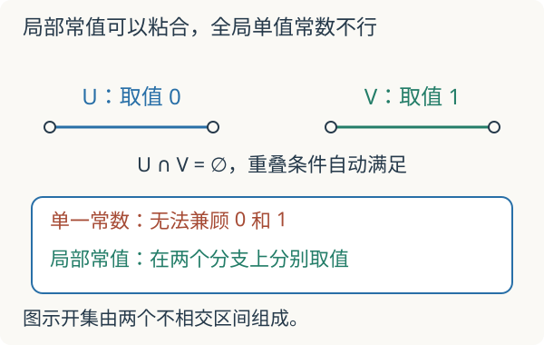

本页目录
基础衔接 04 · 层与粘合：局部答案怎样成为全局答案
问题：每个小区域上都有解，为什么整个空间仍可能没有我们要的解？先修：拓扑空间、局部化；读过链复形有助于后续理解上同调。本讲只处理函数层与一个秩一局部系统，暂不引入 D-模或模空间。
1. 先从真的函数开始
对实直线上的开集 \(U\)，记 \(\mathcal C(U)\) 为 \(U\) 上所有实值连续函数。若 \(V\subset U\)，可以把函数限制到 \(V\)，记为 \(\rho_{UV}:\mathcal C(U)\to\mathcal C(V)\)。限制到自身不改变函数；先限制到 \(V\) 再限制到 \(W\subset V\)，与直接限制到 \(W\) 相同。
这种“每个开集一个对象，加上一致的限制映射”的安排叫预层。层还要求粘合：若开集族 \(U_i\) 覆盖 \(U\)，且每个 \(U_i\) 上的函数 \(f_i\) 在重叠处取值相同，就存在唯一 \(f\in\mathcal C(U)\) 限制为各个 \(f_i\)。
为什么唯一？任取 \(x\in U\)，总能落在某个 \(U_i\)，\(f(x)\) 已被 \(f_i(x)\) 决定。为什么存在？定义 \(f(x)=f_i(x)\)，重叠一致保证不依赖选择哪个区域；连续性是局部性质，所以得到连续函数。粘合条件有实际内容，并非“把文件放到一起”。
2. 两个反例，拆开两种失败
取 \(U=(-2,1)\)、\(V=(-1,2)\)。令 \(f_U(x)=x\)、\(f_V(x)=x+1\)。两者各自连续，却在重叠 \((-1,1)\) 上不同，不能粘合。层公理从未承诺任意两份局部数据都能拼起来；它要求先相容。
另一个微妙问题是只允许“在整个开集上取单一常数”的函数。对不相交开集 \(U=(-2,-1)\)、\(V=(1,2)\)，分别取常数 0 和 1，重叠为空，相容条件自动满足；但在 \(U\cup V\) 上没有一个单一常数同时限制为这两个值。因此这套预层不是层。
改成局部常值函数就可以：每一点附近恒定，但不同连通分支可取不同常数。\(U\cup V\) 上左边为零、右边为一正是合法截面。这里必须区分常值预层与由局部常值函数构成的常值层。

3. 一点附近的信息是函数芽，不只是函数值
比较原点附近的 \(f(x)=x\) 和 \(g(x)=0\)。它们在原点都取零，但在原点任何开邻域上都不相同。函数芽把两个局部函数认作相同，当且仅当它们在该点某个更小邻域上完全一致；所以这两个芽不同。
所有在一点附近的截面按这个关系形成茎 \(\mathcal F_x\)。限制越来越小会忘记远处的信息，却仍能保留局部变化。对仿射概形的结构层，素理想 \(\mathfrak p\) 处的茎是上一讲的局部环 \(R_{\mathfrak p}\)。这解释了局部化怎样进入几何，而不是另外引入一种无关的分数。
再回到 \(\mathbb C[x]\)：在 \(D(x)\) 上允许 \(x\) 作分母，在 \(D(1-x)\) 上允许 \(1-x\) 作分母。二者覆盖仿射直线，因为没有素理想能同时包含 \(x\) 和 \(1-x\)，否则会包含 1。两个正则函数须在共同局部化 \(\mathbb C[x,1/(x(1-x))]\) 中相等才能粘合。
例如分别取 \(a/x\)、\(b/(1-x)\)，其中 \(a,b\in\mathbb C\) 为常数。重叠相等要求 \(a(1-x)=bx\)。比较常数项得 \(a=0\)，再比较一次项得 \(b=0\)。除零函数外，这两份特殊形式的数据不能粘合。这不是说所有全局函数都为零，而是我们选的两种局部形式限制太强。
4. 绕一圈回来，多了一个负号
现在研究圆周上的秩一实局部系统。把圆周分成三个开弧，成对重叠连通、三重重叠为空。每个弧内，一个平坦截面由常数 \(a_i\) 描述；从弧 1 到 2、2 到 3、3 到 1 的坐标变换分别为 \(g_{12},g_{23},g_{31}\in\{1,-1\}\)，反向变换取其逆。
兼容条件是
代入后得到 \(a_1=ha_1\)，其中 \(h=g_{31}g_{23}g_{12}\) 是绕一周的单值化作用。\(h=1\) 时任意实数 \(a_1\) 决定唯一全局平坦截面，空间维数为 1；\(h=-1\) 时 \(2a_1=0\)，实系数下只能取零，维数为 0。每一小段都有非零平坦解，却未必存在全局非零平坦解。
先预测：把两个接缝都改为负号，会比只改一个更难粘合吗？默认符号为 \(+1,+1,-1\)，从 \(a_1=1\) 出发绕一周。
默认沿途数值是 \(1,1,1,-1\)，首尾不相同；全局平坦截面只能为零。改为 \((-1,-1,+1)\) 后两个负号的乘积为正，反而允许非零截面。改变每个弧的局部坐标可重新分配接缝上的符号，绕圈乘积 \(h\) 才是不变的信息；不能把某一个负接缝的位置当作物理缺陷。实验展示的是平坦截面，不是任意连续截面；零截面永远存在，也不能用此例断言任意向量丛没有连续截面。
5. 接到几何朗兰兹之前还差什么
现在可以把“局部系统”读成一套可检验的局部数据与转换，而不只记住名字。平坦联络把这种平行移动推广到微分方程；D-模把微分算子的作用组织进代数；模空间则研究一整个对象族及其同构。它们是下一阶段，不由本讲的三弧符号模型自动得到。
层上同调进一步研究全局截面函子的导出信息。不能把任意粘合失败都直接叫作一个非零上同调类：需要先指定层、覆盖、上链与微分，某些情形还须满足额外条件，才能用 Čech 计算得到层上同调。
6. 两道迁移题
题一。 三个接缝符号是 \(-1,-1,+1\)，从 \(a_1=2\) 出发，写出沿途值及全局平坦截面空间维数。
核对每一步
\(a_2=-2,a_3=2\)，回到弧一仍为 2。单值化作用为 \(+1\)，任意 \(a_1\) 都可延伸，所以实维数为 1。维数由所有可选截面构成的空间决定，不是由我们示范的数值 2 决定。
题二。 若把同样的符号系统改为 \(\mathbb F_2\) 系数，\(-1\) 的单值化是否仍强迫截面为零？
核对系数条件
不会。\(\mathbb F_2\) 中 \(-1=1\)，所谓负号变成恒等变换，约束是恒等式。全局截面空间在 \(\mathbb F_2\) 上维数为 1。前面的零维结论依赖特征不为二，本讲实验始终使用实系数。
速查与返回研究课
预层给出开集上的对象与限制；层要求相容数据唯一粘合；茎记录一点附近的芽；局部系统增加局部常值结构与单值化。返回几何 Langlands 的先修路线，继续检查尚未覆盖的范畴、概形理论、联络与 D-模。
定义与函数例子参见 Stacks Project：Sheaves。本讲的分式相容条件和三弧符号计算已逐步展开，不将它们当作一般几何定理的证明。资料核查：2026-09-08。
后续计算：Čech 与射影直线明确指定覆盖、线丛与微分，逐项算出一次上同调，补上一般粘合例子之后的计算步骤。